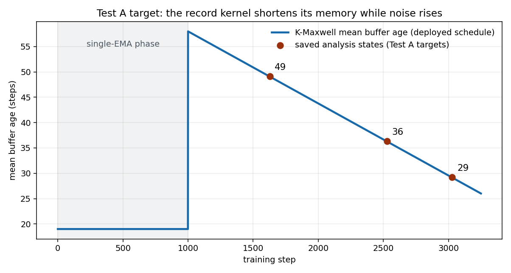
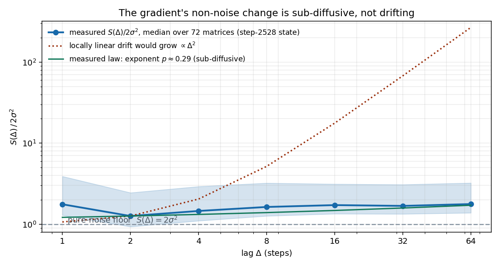
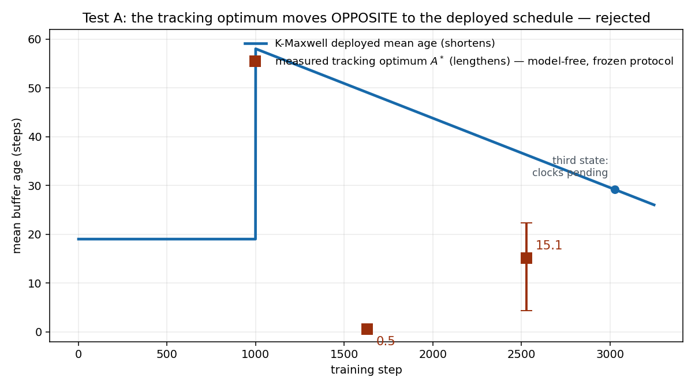

Toward principled factored-curvature accumulation
New measurements show that the gradient changes sub-diffusively, that a future-window alignment score is dominated by closed-loop feedback, and that the reproducible part of the full-Hessian correction is shallow. These results narrow the momentum question and point to a measurable accumulation rule for the factored metric.
Premises carried into this work
Direct measurements established before this study that momentum's main role is to attenuate and reshape the period-two zigzag of the true gradient in high-curvature directions. The oscillation exists without minibatch noise. Earlier training runs also showed that cancelling it completely is harmful; the useful response is nonzero and moderate.
| Prior result | Status entering this study | Constraint on new work |
|---|---|---|
| Current-gradient and Newton/secant targets | Failed kernel-ranking tests on 2026-08-23 | Do not use closeness to either object as a momentum objective |
| Estimator versus controller | Closed-loop framing adopted on 2026-08-24 | Score post-filter update geometry or realized optimization response |
| Kernel response | Nonzero flip transmission, positive in-phase response, and a finite average-lag range explain the measured family ordering | Any kernel objective must preserve all three properties |
| Simple averaging | One exponential buffer adds nothing over no momentum in the tested runs | A useful rule must explain kernel shape, not averaging alone |


New result: the gradient is sub-diffusive over kernel timescales


The measured structure function scales approximately as \(\Delta^p\), with \(p=0.28\) early and \(p=0.29\) in the middle of training. Linear drift predicts \(p=2\); a random walk predicts \(p=1\). Most non-noise change occurs within a few steps and then plateaus through the measured window.
Under a protocol fixed before output, the median optimal tracking lag rises from 0.5 steps [0.5, 1.5] to 15.1 steps [4.4, 22.4] while K8 shortens from 49.1 to 36.3 steps, independently confirming the prior rejection; the pending late state cannot remove the early-level mismatch or the backward early-to-middle trend.
| Saved state | 131k tokens per half: full / after matrix sign | 524k tokens per half: full / after matrix sign |
|---|---|---|
| Early | 0.9915 / 0.9630 | 0.9975 / 0.9878 |
| Late | 0.9970 / 0.9917 | 0.9991 / 0.9973 |
Damped curvature actions already reproduce across disjoint token halves at the smaller budget. Within the reproducible rank 1–24 band, the largest measured eigenvalue is only 3.2–4.2 times the 24th, and the median momentum–curvature loss interaction remains within 0.007 of zero. These measurements bound the currently supported full-Hessian correction as stable, shallow, and approximately separable from kernel choice.
New result: a future-window score measures controller consumption
An earlier three-seed ranking test on 2026-08-24 was inconclusive because the persistent share sat near its estimator's noise floor; its one-buffer-versus-two-buffer ordering also disagreed with the benchmark. The new dense recordings enabled a different statistic: the inner product between each unit-polar update direction and the subsequent window mean.
All four windows give the same ordering. Raw gradients are approximately neutral, while kernel directions have inner products from \(-9\) to \(-36\), with half-split errors of 1.5–2.8. This reproduces a known closed-loop anti-correlation in a new instrument. The future window lies on the trajectory generated by the update being scored, so successful descent consumes and can reverse the later gradients along that direction. The statistic therefore cannot test estimator alignment.
The persistent-component candidate remains untested. A proposed clean instrument uses a learning rate reduced by ten for a 256-step continuation, so the reference window is measured near a fixed model state. This continuation requires separate approval.
Live program: measure accumulation in the factored metric
SOAP and Shampoo accumulate left and right factors from each gradient matrix \(G_t\):
\[ L_t=G_tG_t^{\mathsf T}, \qquad R_t=G_t^{\mathsf T}G_t. \]The estimation frame is appropriate here because the metric itself is the object being estimated. For the averaged gradient \(\bar G_t\), the left factor decomposes as
\[ \mathbb E[\bar G_t\bar G_t^{\mathsf T}] =M_tM_t^{\mathsf T}+C_{\bar G,L,t}, \qquad C_{\bar G,L,t} =\mathbb E[(\bar G_t-M_t)(\bar G_t-M_t)^{\mathsf T}]. \]The workers process consecutive stream chunks, so their gradients are not independent draws. Measured directional noise falls with token count only as tokens to the power \(-0.5\) to \(-0.65\). The covariance contribution must therefore be measured at the training batch composition rather than divided by the worker count.
The first clock estimates are 1.8–3.0 steps. They remain provisional until the batch-composition correction is complete. The final procedure chooses the factor window by held-out preconditioner-action error, then chooses per-direction spectral shrinkage by the same cross-fitting principle. A correction unsupported on held-out data shrinks toward the identity.
Factored-curvature accumulation passes the standing candidate gate. Its target is a measurable metric statistic, not a previously rejected momentum estimand. Its window and shrinkage are accepted only through held-out operator-action prediction.
| Tuned choice today | Proposed measurement | Still declared | Stop condition |
|---|---|---|---|
| Factor decay | Training-batch factor noise and temporal change select the accumulation window by held-out action error | Geometric weighting family, validation horizon, memory cap | No window improves on the fixed-decay factor |
| Inverse-root exponent and stabilizer | Cross-fitted gains shrink each spectral correction toward identity | Operator class, numerical floor, confidence threshold | No improvement over identity after Muon's matrix sign |
| Number of factor clocks | Residual temporal structure within spectral bands | Initial band partition | One clock stays if band-specific windows do not reproduce out of sample |
Live program: derive a response objective for momentum
The kernel problem remains a closed-loop filtering problem. The next objective must preserve moderate period-two transmission, positive in-phase response across the measured periods, and a finite average lag. It must also survive the known failure of one-step and pre-polar alignment scores, which can rank deployed kernels opposite to continuation loss.
No new kernel objective is proposed on this page. Before any candidate receives compute, it must pass the archived falsification list and explain which measured response property its objective controls. The sub-diffusive structure function rules out a linear-drift or random-walk derivation; the future-window result rules out scoring on a trajectory generated by the candidate itself without a counterfactual control.
Immediate decisions
| Work | Present state | Next decision |
|---|---|---|
| Training-batch factor clock | Active; provisional lag 1.8–3.0 steps | Keep the measured window only if held-out factor action improves |
| Factor spectral shrinkage | Specified | Keep each correction only if it transfers across data halves and model states |
| Persistent-component test | Candidate untested; low-learning-rate continuation proposed | Run only after compute approval; failure would reject this candidate estimand |
| Oscillation-centric momentum objective | No candidate yet | Require one theory-motivated objective to pass the standing candidate gate before compute |
| Full-Hessian depth | Parked | Reopen only for a discrepancy that the factored metric cannot explain |